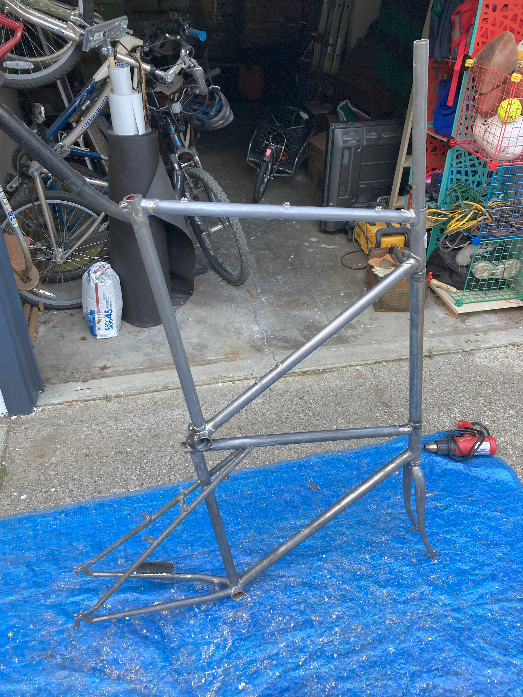
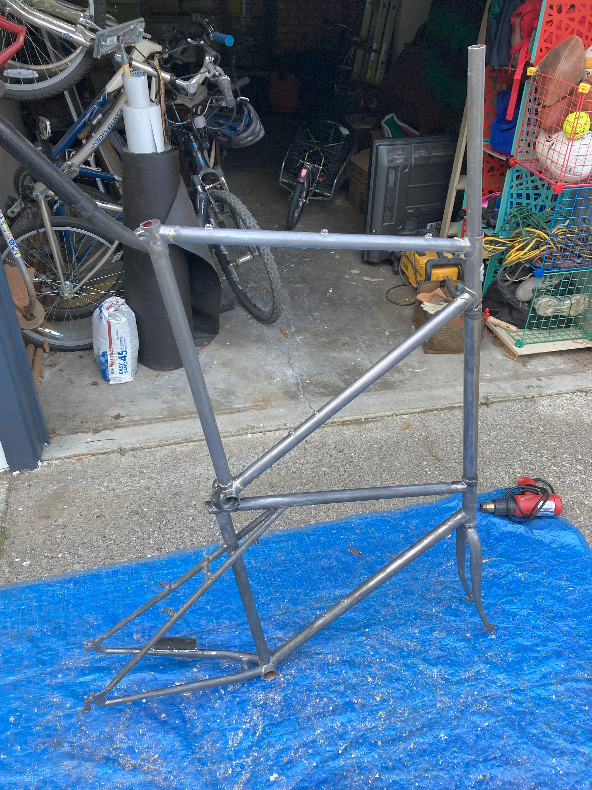

Tall Bike
I built this tall bike from two frames I got off of Craiglist.
I had taken a TIG welding class at Artisan’s Asylum in Boston and finally found a local friend with a welder I could use. Along with the frames, I bought two pieces of steel tubing for this project: one for the headtube connector and one for the extended steerer tube (connected to the fork).

I turned down the OD of both ends of the headtube extension on a lathe so they fit tightly into the headtubes of each frame. Then I cut away material from the bottom frame’s seatpost clamp so that it fit nicely against the bottom bracket shell of the upper frame. I welded both ends of the tube to the frame headtubes and welded the bottom bracket shell to the seatpost clamp. Then I welded the steerer tube to the other extension tube.
I wanted to go for a raw steel finish so I bought paint stripper, removed all of the paint, and clearcoated it. I’m really happy that I did it because I think it looks great, but it was super time consuming and tedious and I probably wouldn’t do it again.
 

I came across some interesting challenges when I was assembling the bike. The headtube is so long that a normal headset press wouldn’t work, so I bought some threaded rod and other hardware and made my own XL headset press. This worked really well. I also made my own XL crown race installation tool using PVC pipe. This didn’t work quite as well. Eventually myself and a friend at a bike shop were able to get the crown race installed using my tool plus the tools at the shop.
I welded a small piece of steel plate on the lower chainstay to act as a step for getting on and off the bike. I realized that the lower crank would hit the step, so I cut out a piece of it to clear the crank arm.
I tried running the chain in a triangle, but it didn’t have much tooth engagement on the cassette, and it skipped a lot and was basically unrideable. I decided to add a second chainring to the lower crankset and run two separate chains. I made an adjustable chain tensioner from a scrap aluminum bracket to keep the upper chain on. This setup works, although about half of the cogs in the cassette are unusable due to the chains rubbing together. I even milled some washers to add as spacers in between the chainrings, but the chain rub is still a big problem.
The rest of the build was pretty fun, like setting up the insanely long front cantilever brake line, and figuring out how to mount a cable hanger for the rear brake.
Here's a picture of me riding it! It's a blast.
Some bonus pictures: